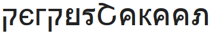

Website Perpustakaan

Jadwal Buka
Senin-Jumat
08.00 WITA - 16.00 WITA
Buku Terpopuler
Tentang
Website ini dibentuk pada tanggal 1 April 2020, digunakan untuk mencari buku yang tersedia di Perpustakaan Jimbaran. Alasan website perpustakaan ini dibuat adalah untuk memudahkan pengguna mencari ketersediaan buku. Terdapat ±100 buku di database perpustakaan ini dari berbagai macam kategori tersedia.
Peminjaman dapat dilakukan di hari kerja Senin - Jumat, pukul 08.00 - 16. 00 WITA.
Narahubung dapat dilihat pada "Kontak" di navigasi diatas.